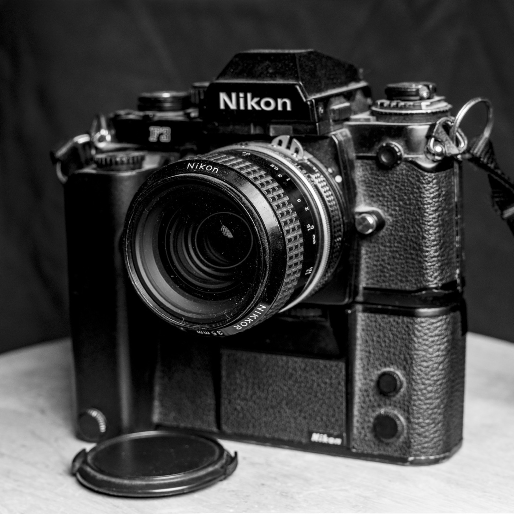

Artist Biography

Chris Silva is a photographer and visual arts educator based in Santa Maria, California. His work lives in a Fine Art practice that blends documentary observation, environmental portraiture, and experimentation, with a focus on meaningful, thought provoking images rooted in place, presence, and lived experience. Working primarily in black and white, he uses light, composition, and atmosphere to shape photographs that feel honest while remaining clearly authored.
Chris works across film, digital, and a film digital hybrid workflow. His foundation in traditional processes informs his technical discipline and visual decisions, while his digital practice supports precision in refinement, sequencing, and presentation. That balance of craft and control allows him to move fluidly between spontaneous observation and intentional construction, without losing consistency in tone or message.
Chris's storytelling began with light and a camera that still carries deep meaning. Shortly before he passed, his uncle, a proud member of the Yaqui Nation, placed a Nikon F3 in Chris's hands and trusted him to carry the legacy forward. His uncle named it "The Spirit Box," and Chris continues to shoot with that same film camera today as a reminder that image making can honor memory, identity, and purpose.

That early foundation led him to Ernest Righetti High School, where Mr. Garcia's legendary film class sparked a lasting love for creating moving pictures. After high school, Chris built a content creation business that took him across the United States and internationally, including projects in Japan and Cancun. His early work developed under Alias Productions, later evolving into Creative Silva, and most recently Cris & Laura Inspired EYE Images, alongside his wife, Laura. Over the years, he has worked across the medical field, extreme motorsports, music and entertainment, commercial photo and video production, weddings and portraiture, and brand development, including logo design, company branding, sign design and production, screen printing, and embroidery.
Chris continued building his craft through the Applied Arts and Design program at Allan Hancock College and later earned a Bachelor of Arts in Photography from Southern New Hampshire University. He is currently pursuing a Master of Arts in Education, Design, and Technology, a reflection of his belief that he never stops learning and that growth is a lifelong practice. Today, he brings that full journey into the classroom as a Photography and Digital Arts teacher at Pioneer Valley High School, supported by a formal CTE teaching credential earned through Cal Lutheran University in partnership with VCOE. His work is anchored in a three part creative foundation of photography, graphic design, and video production, strengthened by a background in marketing and visual communication.
In addition to his Fine Art work, Chris is affiliated with Cris & Laura Inspired EYE Images and Creative Silva, where he applies the same standards of craft, clarity, and intention across commissioned projects. He works alongside his wife, Laura, an equally skilled and dedicated photography educator and industry professional. Together, they balance creative work and teaching with family life as parents of two daughters. Outside of the studio and classroom, they spend time outdoors exploring the Central Coast through off road and travel focused adventures that continue to shape their sense of place, story, and image making.
Whether he is building a photographic series, teaching the next generation of creatives, or creating work for clients, his goal remains the same: to produce photographs that invite reflection and stand up to time.